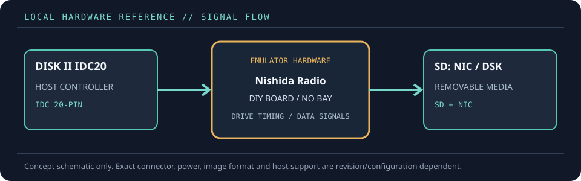

[ FLOPPY EMULATORS // IDENTIFIED HARDWARE ]
Nishida Radio SDISK II
A model-specific record for a physical floppy-drive emulator. It distinguishes the emulator hardware, removable media and host-facing drive signals; firmware support alone does not establish compatibility with a particular machine.

MODEL IDENTIFICATION: PRODUCT RECORD: Nishida Radio SDISK II. Compatibility is conditional on the actual host’s connector, controller, signal conventions, drive geometry, firmware and media configuration; do not infer fit from connector count or nominal drive size alone.
Recorded specifications
| Cataloged part | Nishida Radio SDISK II |
|---|---|
| Manufacturer / project | Nishida Radio |
| Product family | Open design Apple II Disk II emulator |
| Drive bay / physical fit | Small SD-card daughterboard/DIY assembly; no standard drive bay. It connects to the Apple II Disk II interface card through a 20-pin IDC cable. |
| Host interface / power | IDC 20-pin connection to a Disk II interface card; onboard SD socket and activity LED. The design uses an ATmega328P and requires correctly assembled/programmed hardware. |
| Removable media / image format | SD card under 2 GB formatted FAT16; uses Nishida’s NIC image format. DSK and NIC files can be converted with the project’s dsk2nic/nic2dsk utilities. |
| Host compatibility | Apple II family with a Disk II Interface Card. The designer reports testing on Apple II J-Plus, IIe and II GS (ROM 1 and ROM 3); Apple IIc requires a separate connection method. |
| Variants and identification | Open hardware/design files rather than a mass-produced turnkey product. Record PCB revision, component substitutions, firmware build, SD card and cable assembly; the project is supplied without warranty. |
Compatibility and handling
- This is a real, buildable floppy-drive emulator design, not a generic SD adapter; it reproduces the Disk II drive role in hardware.
- The designer warns that building requires electronics/programming skills and that incorrect assembly can damage the host or interface card.
- Formatting is not fully emulated. The author recommends preparing disk images with an Apple II emulator, keeping backups, and respecting the device’s read/write limitations.
Before installation, compare the emulator’s exact revision and interface against the host service documentation. Confirm connector keying and pin one, power voltage/polarity, drive select, motor/disk-change signals, expected density and image geometry. Preserve a read-only copy of original disk images and configuration files before experimenting.
Model notes
Open hardware/design files rather than a mass-produced turnkey product. Record PCB revision, component substitutions, firmware build, SD card and cable assembly; the project is supplied without warranty.
SD card under 2 GB formatted FAT16; uses Nishida’s NIC image format. DSK and NIC files can be converted with the project’s dsk2nic/nic2dsk utilities.
Sources & further reading
- Nishida Radio — SDISK II English documentationDesigner’s manual, supported image formats, host tests, SD requirements and hardware notes.
- Nishida Radio — SDISK II connector documentationDesigner’s connection and cable information for interfacing the board with a Disk II card.
- Nishida Radio — SDISK II hardware, schematic and firmware archiveOriginal project design files, schematic and firmware archive referenced by the documentation.
Manufacturer statements describe product capability, not guaranteed operation on every revision of the named host. Confirm current manual, firmware and wiring before installation.